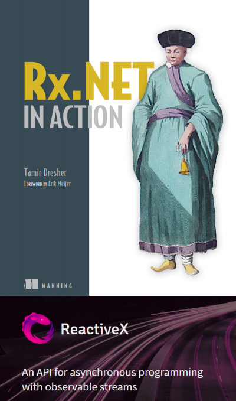
1. 引言
An API for asynchronous programming with observable streams.
ReactiveX is a combination of the best ideas from the Observer pattern, the Iterator pattern, and functional programming.
ReactiveX 使用可观察数据流进行异步编程的API。
ReactiveX结合了观察者模式、迭代器模式和函数式编程的精华。
关于Reactive（本文统一译作响应式），有一个The Reactive Manifesto【响应式宣言】：响应式系统（Reactive System）具备以下特质：即时响应性（Responsive）、回弹性（Resilient）、弹性（Elastic）以及消息驱动（Message Driven）。
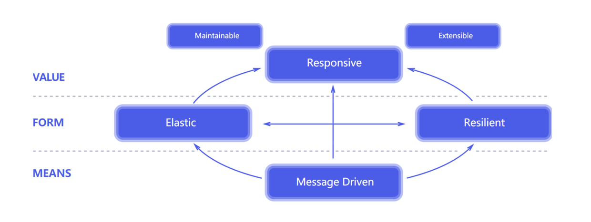
很显然开发一个响应式系统，并不简单。
那本文就来讲一讲如何基于Rx.NET进行响应式编程，进而开发更加灵活、松耦合、可伸缩的响应式系统。
2. 编程范式
在开始之前呢，我们有必要了解下几种编程范式：命令式编程、声明式编程、函数式编程和响应式编程。
命令式编程：命令式编程的主要思想是关注计算机执行的步骤，即一步一步告诉计算机先做什么再做什么。
1 | //1. 声明变量 |
声明式编程：声明式编程是以数据结构的形式来表达程序执行的逻辑。它的主要思想是告诉计算机应该做什么，但不指定具体要怎么做。
1 | var nums = from num in Enumerable.Range(1,10) where num > 5 select num |
函数式编程：主要思想是把运算过程尽量写成一系列嵌套的函数调用。
1 | Enumerable.Range(1, 10).Where(num => num > 5).ToList().ForEach(Console.WriteLine); |
响应式编程：响应式编程是一种面向数据流和变化传播的编程范式，旨在简化事件驱动应用的实现。响应式编程专注于如何创建依赖于变更的数据流并对变化做出响应。
1 | IObservable<int> nums = Enumerable.Range(1, 10).ToObservable(); |
3. Hello Rx.NET
从一个简单的Demo开始。
假设我们现在模拟电热壶烧水，实时输出当前水温，一般我们会这样做：
1 | Enumerable.Range(1, 100).ToList().ForEach(Console.WriteLine); |
假设当前程序是智能家居的中控设备，不仅控制电热壶烧水，还控制其他设备，为了避免阻塞主线程。一般我们会创建一个Thread或Task去做。
1 | Task.Run(() => Enumerable.Range(1, 100).ToList().ForEach(Console.WriteLine)); |
假设现在我们不仅要在控制台输出而且还要实时通过扬声器报警。这时我们应该想到委托和事件。
1 | class Heater |
瞬间代码量就上去了。但是借助Rx.NET，我们可以简化成以下代码：
1 | var observable = Enumerable.Range(1, 100).ToObservable(NewTheadScheduler.Default);//申明可观察序列 |
仅仅通过以下三步：
- 调用
ToObservable将枚举序列转换为可观察序列。 - 通过指定
NewTheadScheduler.Default来指定在单独的线程进行枚举。 - 调用
Subscribe方法进行事件注册。 - 借助
Subject进行多播传输
通过以上我们可以看到Rx.NET大大简化了事件处理的步骤，而这只是Rx的冰山一角。
4. Rx.NET 核心
Reactive Extensions（Rx）是一个为.NET应用提供响应式编程模型的库，用来构建异步基于事件流的应用，通过安装System.ReactiveNuget包进行引用。Rx将事件流抽象为Observable sequences（可观察序列）表示异步数据流，使用LINQ运算符查询异步数据流，并使用Scheduler来控制异步数据流中的并发性。简单地说：Rx = Observables + LINQ + Schedulers。
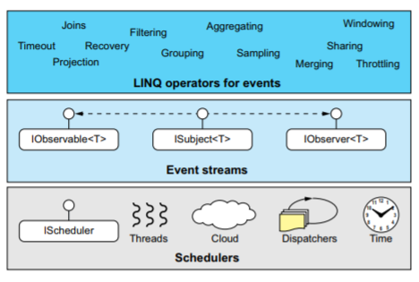
在软件系统中，事件是一种消息用于指示发生了某些事情。事件由Event Source（事件源）引发并由Event Handler（事件处理程序）使用。
在Rx中，事件源可以由observable表示，事件处理程序可以由observer表示。
但是应用程序使用的数据如何表示呢，例如数据库中的数据或从Web服务器获取的数据。而在应用程序中我们一般处理的数据无外乎两种：静态数据和动态数据。 但无论使用何种类型的数据，其都可以作为流来观察。换句话说，数据流本身也是可观察的。也就意味着，我们也可以用observable来表示数据流。
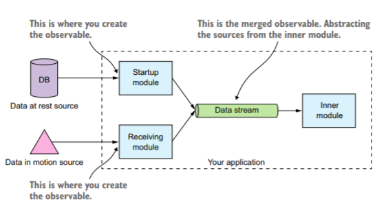
讲到这里，Rx.NET的核心也就一目了然了：
- 一切皆为数据流
- Observable 是对数据流的抽象
- Observer是对Observable的响应
在Rx中，分别使用IObservable<T>和IObserver<T>接口来表示可观察序列和观察者。它们预置在system命名空间下，其定义如下：
1 | public interface IObservable<out T> |
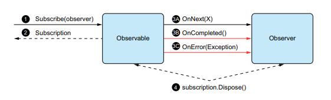
5. 创建IObservable
创建IObservable<T>主要有以下几种方式：
1. 直接实现IObservable<T>接口
2. 使用Observable.Create创建
1 | Observable.Create<int>(observer=>{ |
3. 使用Observable.Deffer进行延迟创建（当有观察者订阅时才创建）
比如要连接数据库进行查询，如果没有观察者，那么数据库连接会一直被占用，这样会造成资源浪费。使用Deffer可以解决这个问题。
1 | Observable.Defer(() => |
4. 使用Observable.Generate创建迭代类型的可观察序列
1 | IObservable<int> observable = |
5. 使用Observable.Range创建指定区间的可观察序列
1 | IObservable<int> observable = Observable.Range (0, 10).Select (i => i * 2); |
6. 创建特殊用途的可观察序列
1 | Observable.Return ("Hello World");//创建单个元素的可观察序列 |
7. 使用ToObservable转换IEnumerate和Task类型
1 | Enumerable.Range(1, 10).ToObservable(); |
8. 使用Observable.FromEventPattern<T>和Observable.FromEvent<TDelegate, TEventArgs>进行事件的转换
1 | public delegate void RoutedEventHandler(object sender, |
9. 使用Observable.Using进行资源释放
1 | IObservable<string> lines = |
10. 使用Observable.Interval创建指定间隔可观察序列
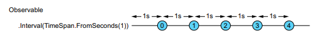
11. 使用Observable.Timer创建可观察的计时器
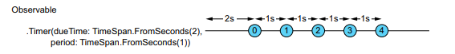
6. RX 操作符
创建完IObservable
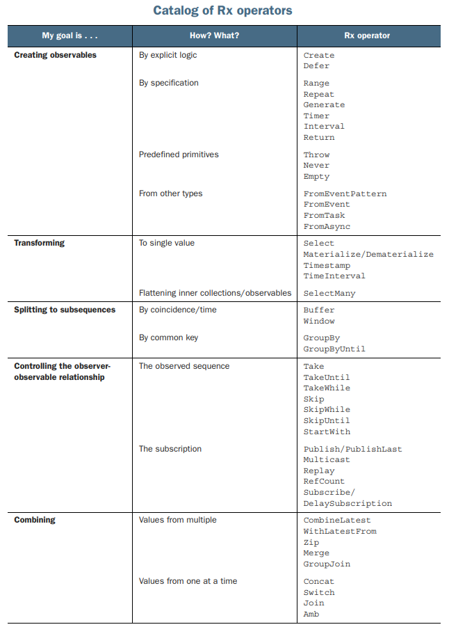
下面通过图示来解释常用操作符的作用：
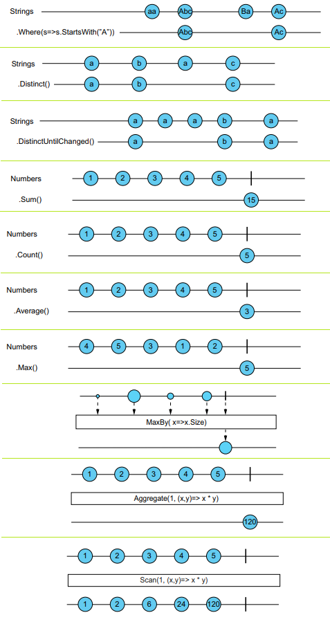
7. 多播传输靠：Subject
基于以上示例，我们了解到，借助Rx可以简化事件模型的实现，而其实质上就是对观察者模式的扩展。提到观察者模式，我们知道一个Subject可以被多个观察者订阅，从而完成消息的多播。同样，在Rx中，也引入了Subject用于多播消息传输，不过Rx中的Subject具有双重身份——即是观察者也是被观察者。
1 | interface ISubject<in TSource, out TResult> : IObserver<TSource>,IObservable<TResult> |
Rx中默认提供了以下四种实现：
Subject
- 向所有观察者广播每个通知
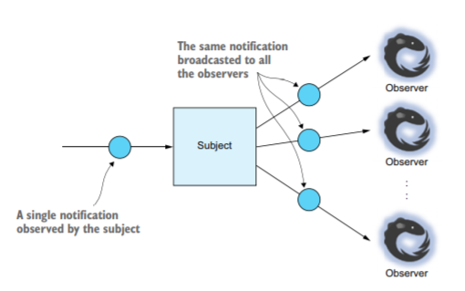AsyncSubject
- 当可观察序列完成后有且仅发送一个通知
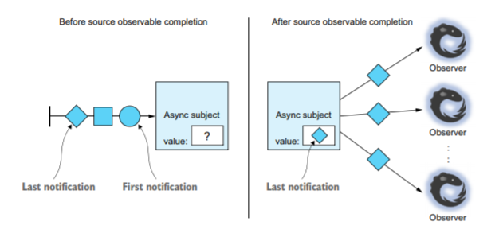ReplaySubject
- 缓存指定通知以对后续订阅的观察者进行重放
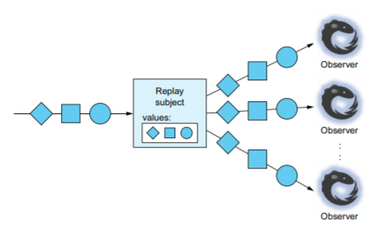BehaviorSubject
- 推送默认值或最新值给观察者
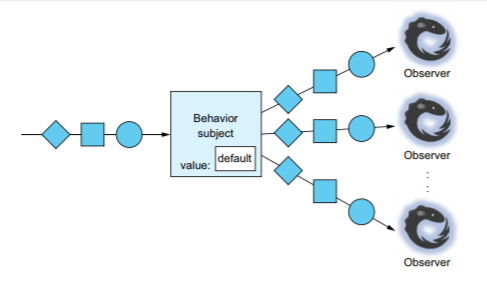
但对于第一种Subject<T>有一点需要指出，当其有多个观察者序列时，一旦其中一个停止发送消息，则Subject就停止广播所有其他序列后续发送的任何消息。
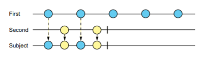
8. 有温度的可观察者序列
对于Observable，它们是有温度的，有冷热之分。它们的区别如下图所示：
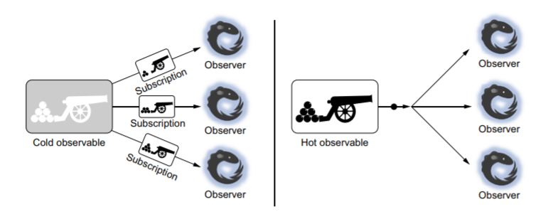
Cold Observable：有且仅当有观察者订阅时才发送通知，且每个观察者独享一份完整的观察者序列。
Hot Observable：不管有无观察者订阅都会发送通知，且所有观察者共享同一份观察者序列。
9. 一切皆在掌控：Scheduler
在Rx中，使用Scheduler来控制并发。而对于Scheduler我们可以理解为程序调度，通过Scheduler来规定在什么时间什么地点执行什么事情。Rx提供了以下几种Scheduler：
- NewThreadScheduler：即在新线程上执行
- ThreadPoolScheduler：即在线程池中执行
- TaskPoolScheduler：与ThreadPoolScheduler类似
- CurrentThreadScheduler：在当前线程执行
- ImmediateScheduler：在当前线程立即执行
- EventLoopScheduler：创建一个后台线程按序执行所有操作
举例而言：
1 | Observable.Return("Hello",NewThreadScheduler.Default) |
10. 最后
罗里吧嗦的总算把《Rx.NET In Action》这本书的内容大致梳理了一遍，对Rx也有了一个更深的认识，Rx扩展了观察者模式用于支持数据和事件序列，内置系列操作符允许我们以声明式的方式组合这些序列，且无需关注底层的实现进行事件驱动开发：如线程、同步、线程安全、并发数据结构和非阻塞IO。
但事无巨细，难免疏漏。对响应式编程有兴趣的不妨拜读下此书，相信对你会大有裨益。
参考资料：
Rx.NET in Action.pdf
ReactiveX
.Net中的反应式编程(Reactive Programming)